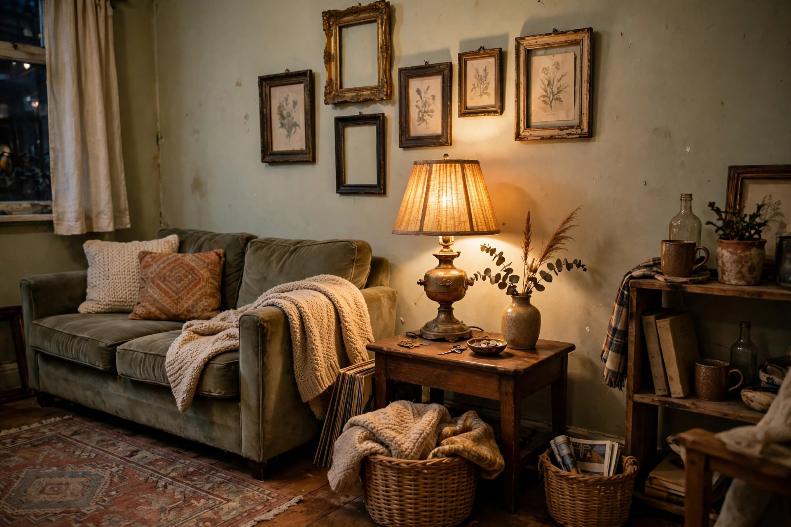

Budget Decor & DIY
Budget Apartment Decor Ideas From Thrift Stores
Intro
Thrift stores are the budget decorator's secret weapon: solid wood, real glass, ceramic and brass for a few dollars, in a world where the same things cost ten times as much new. The trick is knowing what to buy and what to walk past. A good thrift find looks expensive because it is well made; a bad one looks cheap because it was cheap when it was new, too.
This guide has 12 thrift finds worth buying — frames, vases, lamps and baskets — and what to skip, for a small apartment. Start with one shop, one list and a price limit, and leave with one good piece rather than five almost-good ones.

1. Solid wood frames — $2–$5 each
Wooden picture frames are the best thrift buy there is. A solid wood frame for $3, painted or left natural, looks like a $25 frame once your art is inside. Check the corners for damage and the glass for scratches, and buy frames in odd sizes — the art can be cut to fit. Avoid plastic frames with fake gold: they look cheap new and worse second-hand. Three matching wood frames in different sizes make a gallery wall for under $10.
2. Ceramic vases in plain colours — $2–$4 each
A plain ceramic vase — white, cream, sage or terracotta — is a thrift staple, and it works with fresh flowers, dried stems or nothing at all. Vases cost about $3 each. Choose simple shapes without patterns, because a plain vase suits any room and any season. Avoid vases with chips on the rim or cracks: they leak, and a chipped vase looks like a mistake rather than a find. One tall vase and one short vase together make a shelf look styled.
3. A table lamp with a good base — $5–$10
A lamp with a heavy ceramic, brass or wooden base is worth buying even if the shade is ugly — shades are cheap to replace, bases are not. A good thrift lamp costs about $7, and a new plain shade about $5. Test the lamp in the shop if you can, and check the cord for damage. A lamp on a bedside table or a desk changes the light in the whole room, and a thrift lamp with a new shade looks like a boutique buy.
4. Baskets of every size — $2–$5 each
Baskets are the small flat's storage in disguise, and thrift shops sell them for a few dollars. A basket costs about $3. Use a large one for blankets, a medium one for shoes by the door, and a small one for remotes and chargers. Choose sturdy baskets with handles, and avoid baskets that smell damp or have broken weaving. A basket that holds clutter is worth more than a decorative object that only sits there.
5. Glass jars and bottles as vases — $1–$3 each
Glass jars, bottles and old jam jars are free vases, and thrift shops sell interesting ones for $1–$2. A tall bottle holds a single stem beautifully; a short jar holds a small bunch. Group three jars of different heights on a windowsill or a shelf for a display that costs under $5. Wash them well, remove old labels with hot water, and keep the shapes simple — clear glass suits every room.
6. A mirror with a good frame — $5–$10
Mirrors make small rooms look bigger, and a thrift mirror with a wooden or metal frame costs a tenth of a new one. A mirror costs about $8. Check the glass for dark spots and the frame for wobble, and hang it opposite a window to bounce light into the room. A mirror above a sofa or a desk doubles the light and the sense of space. Avoid mirrors with plastic frames that have yellowed — they are hard to rescue.
7. Books with beautiful covers — $1–$2 each
Old books with cloth covers, gold lettering or beautiful spines are decoration as well as reading. Buy books for their covers — a row of green, cream or burgundy spines on a shelf looks like a library, even if you never read them. Books cost about $1 each. Stack two or three flat on a coffee table as a stand for a candle or a small plant. Avoid books with damp, mould or a musty smell: they will pass it on to the shelf.
8. Brass and copper small things — $2–$5 each
Small brass and copper objects — a candlestick, a tray, a trinket box — add warmth to a small room, and they polish up beautifully. A brass candlestick costs about $3. Clean brass with lemon and salt, or leave the patina for a vintage look. One or two brass pieces per room is enough; a whole shelf of brass looks like a collection, not a home. Avoid brass-plated plastic, which peels and cannot be polished.
9. A wooden tray or chopping board — $3–$6
A wooden tray corrals clutter on a coffee table, a bedside table or an ottoman, and a thrift tray costs about $4. A wooden chopping board does the same job on a kitchen counter, holding oils and jars in one tidy group. Choose solid wood, sand any rough edges, and oil it to bring back the colour. A tray makes a messy surface look intentional, because everything inside it belongs together.
10. Curtains and fabric by the metre — $3–$8
Thrift shops sell curtains, tablecloths and fabric lengths for a few dollars, and a single curtain makes two pillow covers or a table runner. A curtain costs about $5. Choose natural fabrics — cotton, linen — in plain colours or simple patterns, and wash them before use. Fabric is the cheapest way to change a room's colour, and thrift fabric has already been washed soft. Avoid stained or sun-faded fabric: the fade will show once it is cut.
11. A small side table or stool — $5–$10
A small wooden stool or side table is the best large thrift find for a small flat: it is a seat, a side table and a plant stand in one. A stool costs about $8. Check it for wobble, sand and paint it if needed, and it will outlast most flat-pack furniture. A stool beside the sofa holds a book and a cup; in the bedroom it holds the phone and a glass of water. Measure your space before you buy — a stool that does not fit is clutter, not furniture.
12. What to skip — $0
The cheapest idea costs nothing: walk past the things that are never worth it. Skip chipped mugs and plates, stained cushions, broken electronics, plastic flowers, and anything with a smell you cannot wash out. Skip furniture that wobbles, drawers that stick, and anything bigger than the space you measured. A thrift shop rewards patience: the best finds are the ones you waited for, not the ones you settled for on the first visit.
Conclusion
Thrift-store decorating is not about filling a flat with cheap things — it is about buying a few well-made things for a few dollars each. A wood frame, a ceramic vase, a brass candlestick and a basket can furnish a shelf for under $15 and look like they cost ten times as much. Go with a list, check every piece for damage, and leave with one good find. The next visit will bring the next one.
Budget recap
- Three wood frames: ~$9 - Two ceramic vases + a basket: ~$9 - A lamp base + new shade: ~$12
Total for a styled shelf: ~$10–$20 — or $0 by skipping the things that are not worth it.
Pinterest pin titles
- Budget Apartment Decor Ideas From Thrift Stores — 12 Finds
- 12 Thrift Finds Worth Buying (and What to Skip)
- Thrift It: 12 Decor Finds That Look Expensive